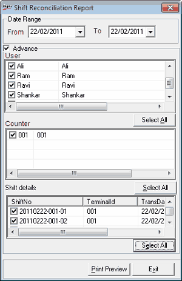

The Reconciliation report gives the details of reconciliations carried out in a Till/ Counter, for a selected period. This report shows the reconciliation details for each payment mode in a shift. You can generate this report for individual cashiers, counters and shift IDs as well.
How to reach: Reports > Cash > Reconciliation Report
The Shift Reconciliation Report window is displayed.

Date Range: By default, the From and To dates are the current Shoper date. You can enter any date range but the To date cannot be greater than the Shoper date.
Advance: Select to generate user-wise counter-wise reconciliation report. By selecting this option, you can select individual user IDs/ terminal IDs/ shift details for report generation.
User: Select the required user IDs (cashier IDs)
Select All: Click to select all the user IDs (cashier IDs). This button toggles between Select All and Remove All.
Counter: Select the required terminal IDs
Select All: Click to select all the terminal IDs. This button toggles between Select All and Remove All.
Shift Details: Select the required shift IDs
Select All: Click to select all the shift IDs. This button toggles between Select All and Remove All.